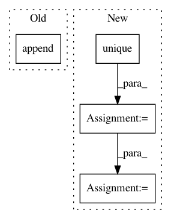

c30c2faf7a5100bbac6294548f4e66b127ac95dd,treeinterpreter/treeinterpreter.py,,_predict_tree,#Any#Any#Any#,36
Before Change
contrib = values_list[path[i+1]] - \
values_list[path[i]]
contribs[feature_index[path[i]]] += contrib
contributions.append(contribs)
return direct_prediction, biases, np.array(contributions)
After Change
return direct_prediction, biases, contributions
else:
unique_leaves = np.unique(leaves)
unique_contributions = {}
for row, leaf in enumerate(unique_leaves):
for path in paths:
if leaf == path[-1]:
break
contribs = np.zeros(line_shape)
for i in range(len(path) - 1):
contrib = values_list[path[i+1]] - \
values_list[path[i]]
contribs[feature_index[path[i]]] += contrib
unique_contributions[leaf] = contribs
for row, leaf in enumerate(leaves):
contributions.append(unique_contributions[leaf])
return direct_prediction, biases, np.array(contributions)
In pattern: SUPERPATTERN
Frequency: 3
Non-data size: 4
Instances
Project Name: andosa/treeinterpreter
Commit Name: c30c2faf7a5100bbac6294548f4e66b127ac95dd
Time: 2016-12-22
Author: jiangchun.lee@gmail.com
File Name: treeinterpreter/treeinterpreter.py
Class Name:
Method Name: _predict_tree
Project Name: nicodv/kmodes
Commit Name: 6fd7c9882886265dd1b793e17835bd7575a902c2
Time: 2016-05-27
Author: nico.devos@autogrid.com
File Name: kmodes/util/__init__.py
Class Name:
Method Name: encode_features
Project Name: dPys/PyNets
Commit Name: 9da4cefc6f1d6ac053d948135a668c04d8a9f090
Time: 2017-11-09
Author: dpisner@utexas.edu
File Name: pynets/nodemaker.py
Class Name:
Method Name: parcel_masker